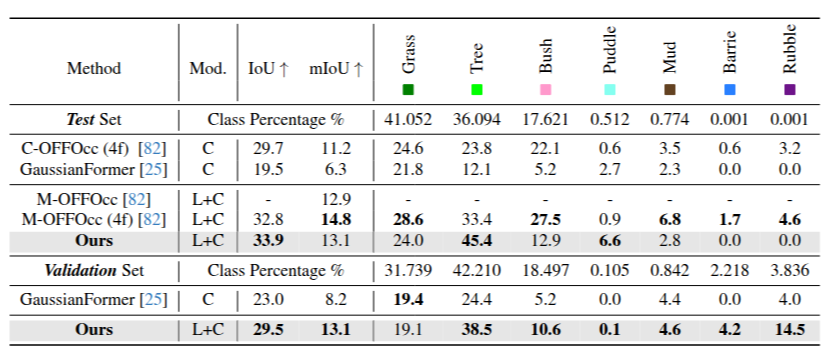

GaussianFormer3D: Multi-Modal Gaussian-based Semantic Occupancy Prediction with 3D Deformable Attention
Abstract
Method
We propose a novel multi-modal Gaussian-based semantic occupancy prediction framework. By integrating LiDAR and camera data, our method significantly outperforms camera-only baselines with similar memory usage.
We design a voxel-to-Gaussian initialization module to provide 3D Gaussians with geometry priors from LiDAR data. We also develop an enhanced 3D deformable attention mechanism to update Gaussians by aggregating LiDAR-camera fusion features in a lifted 3D space.
We present extensive evaluations on two on-road datasets, nuScenes-SurroundOcc and nuScenes-Occ3D, and one off-road dataset, RELLIS3D-WildOcc. Results show that our method performs on par with state-of-the-art dense grid-based methods while having reduced memory consumption and improved efficiency.
Quantitative Results
3D semantic occupancy prediction performance on the on-road nuScenes-SurroundOcc validation set.
3D semantic occupancy prediction performance on the off-road RELLIS3D-WildOcc validation and test sets.
Efficiency evaluation and comparison on the nuScenes-SurroundOcc validation set during inference.

Qualitative Results
Visualization on the on-road nuScenes validation set.

Visualization comparison with GaussianFormer.
Visualization on the off-road RELLIS3D dataset.